BBST
Final
Course → Computer aided design
BSST Team | ZWU
2024.6
1.Class Practice
(AUTODESK FUSION & SHAPR 3D)
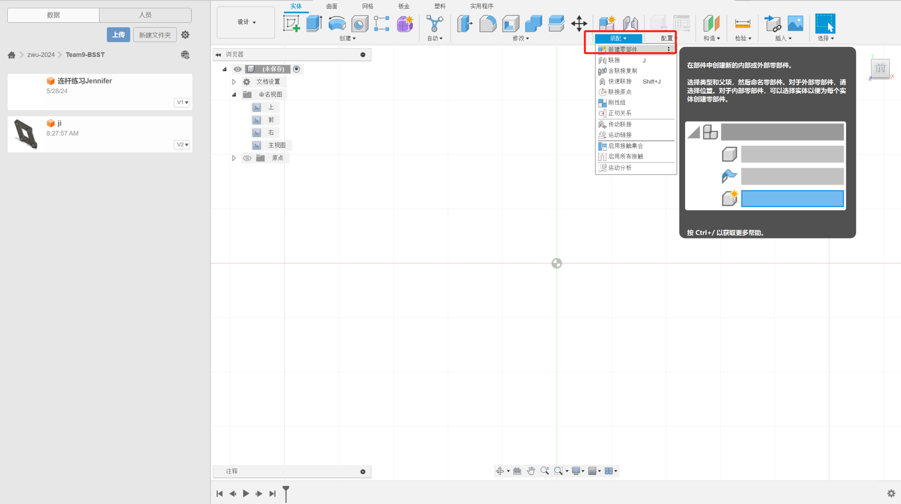
On the left is our group's warehouse, where you can share and edit the
parts you have made.
If we want to create a new component, we need to click the New Component
button as shown in the picture.
4.Final project component
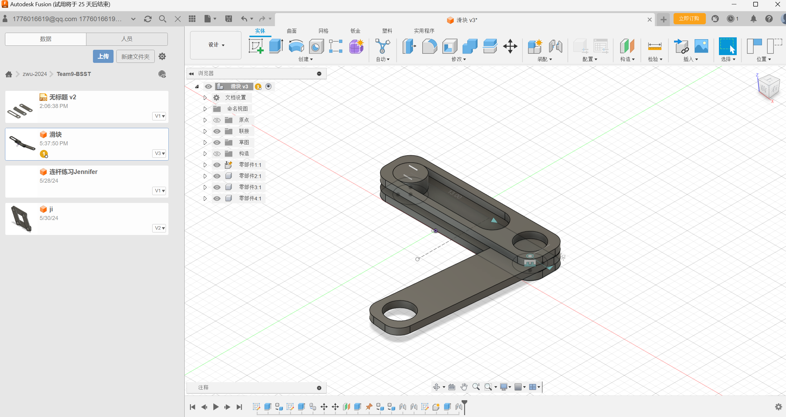
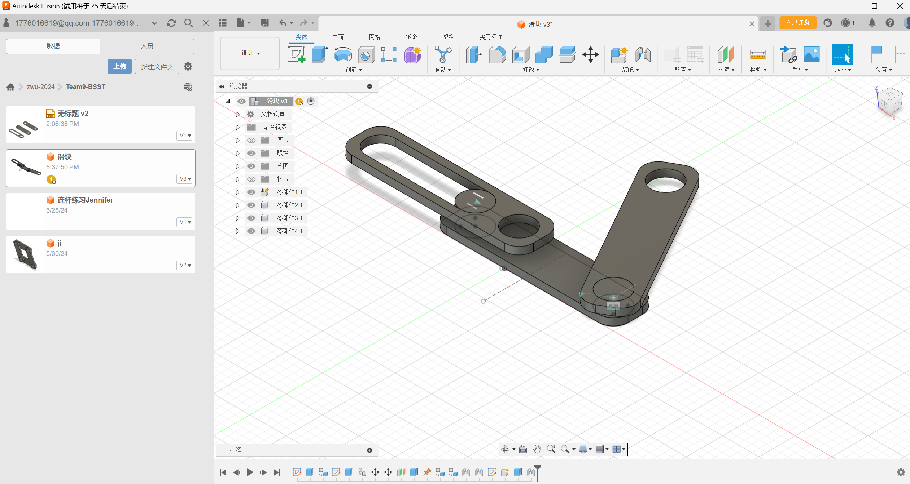
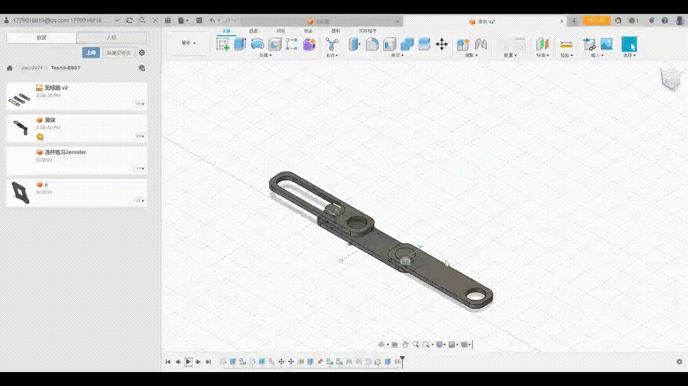
This is one of the parts of the last work we made. It is a pot bottom tray.
We use the above methods to make it. After each part is made, we will then
customise the parts.
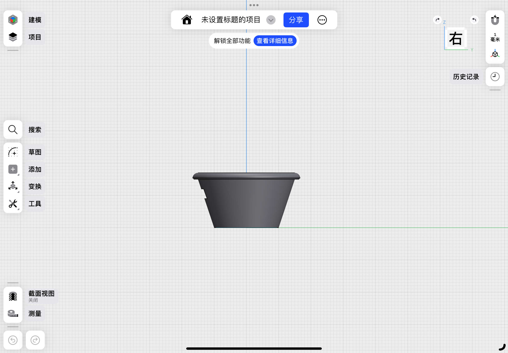
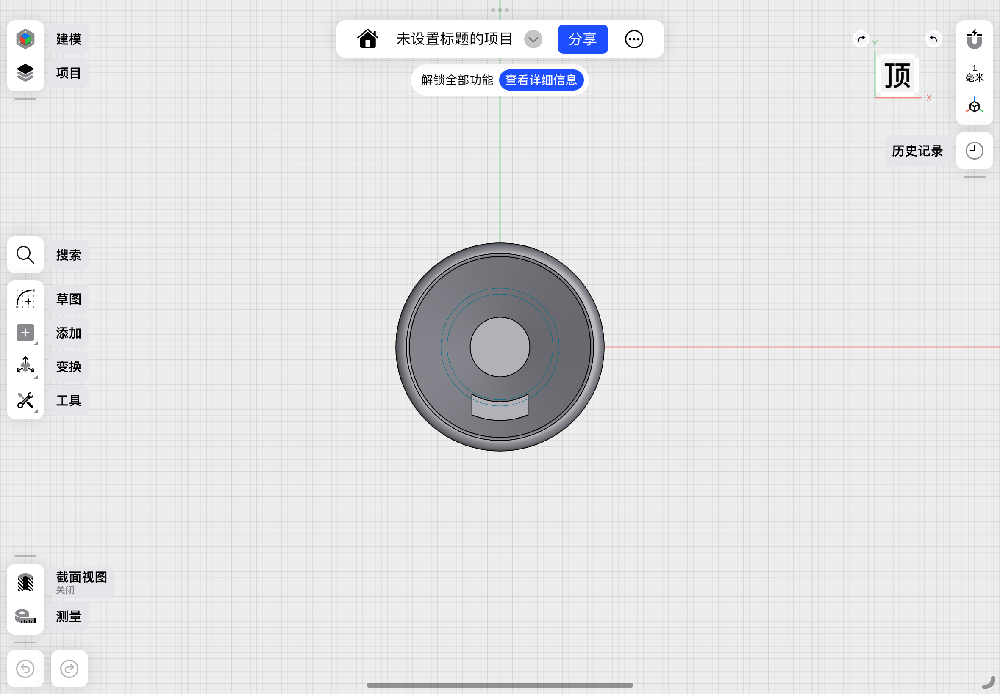
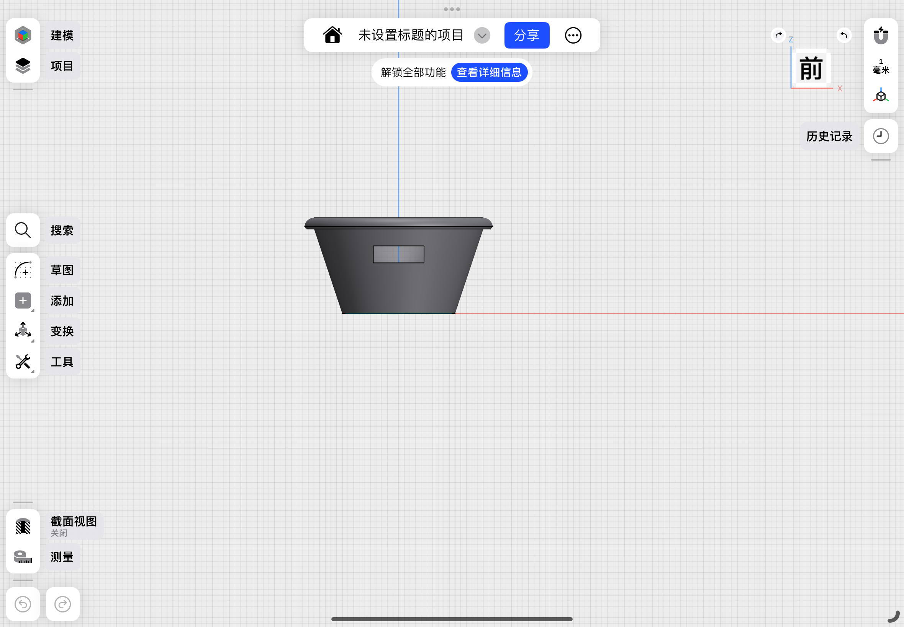
This is one of the parts of the last work we made. It is a pot bottom tray.
We use the above methods to make it. After each part is made, we will then
customise the parts.
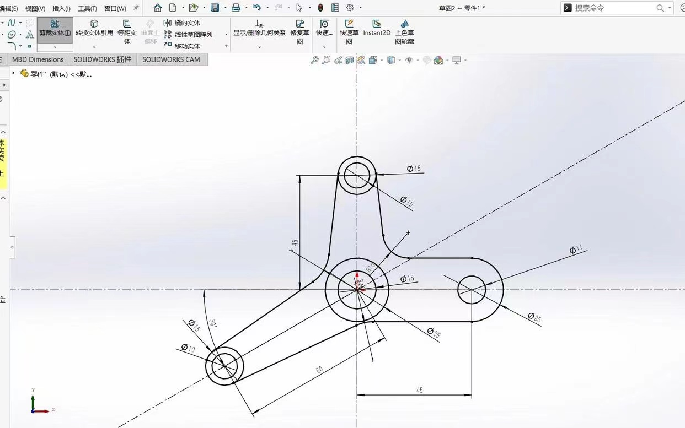
7.Simple introduce another CAD software or experience

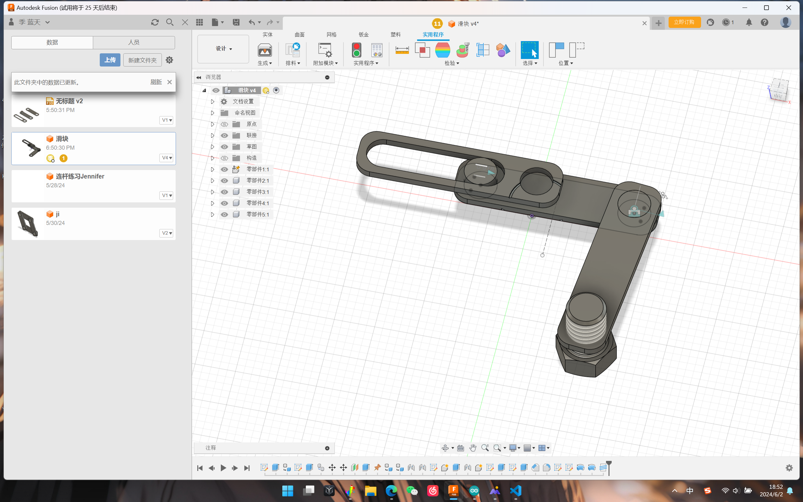
5.Plug-in usage
Learn about Autodesk API: First of all, you need to understand the API
documents of Autodesk products, which will tell you how to interact with
Autodesk products and develop plug-ins. Different Autodesk products may have
different APIs, such as AutoCAD, Revit, Maya, etc.
Choose development tools: Plug-ins for Autodesk products usually use
specific development tools and languages for development. For example,
AutoCAD plug-ins usually use AutoLISP, Visual Basic for Applications (VBA)
or. NET and other languages are developed. Revit's plug-ins can be
developed using Revit API, C#, Python and other languages. Choose the
development tools suitable for your Autodesk products and skill level.
Write plug-in code: Write the plug-in code according to your needs and the
API documentation of Autodesk products. This may involve interacting with
various objects of Autodesk products, such as drawing objects, model
elements, etc. You can use the functions provided by the API to realise your
plug-in functions, such as creating new drawing elements, modifying existing
elements, performing specific operations, etc.
Testing and debugging: After writing the plug-in code, it is very important
to test and debug. Make sure that your plug-in works properly and there are
no errors or abnormalities. You can test in Autodesk products and debug and
modify the code as needed.
Release and distribution: Once your plug-in is completed and passed the
test, you can consider publishing and distributing it to other users. You
can upload the plug-in to the Autodesk plug-in store or other third-party
platforms for other users to download and use.
Use the tools on the left to sketch.
Constrain sketches through "sketch dimensions" and the right
toolbar.
The sketch line before constraint is blue, and the sketch line after
constraint is black.
Parts can be constrained by labelling the size.The shortcut key is
CapsLK plus D.
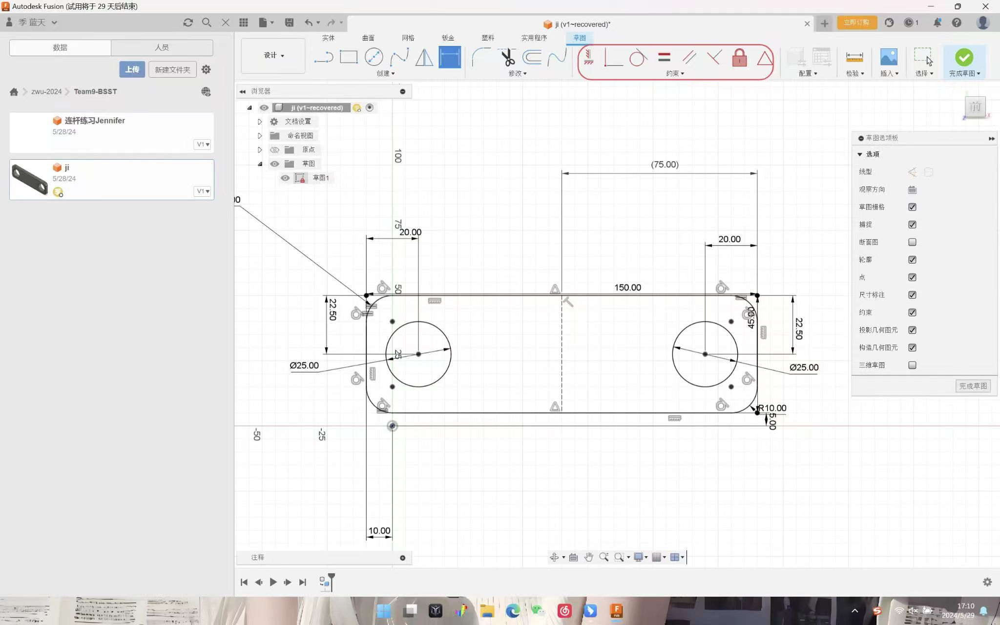
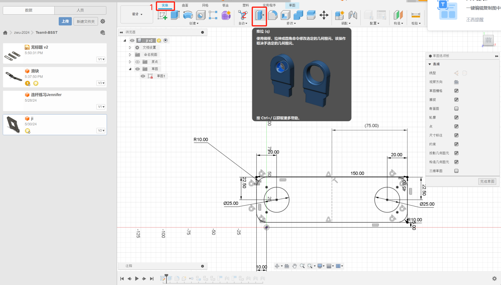
Using connections to achieve twisted connections between parts.
Fix the center of the circle at the same position in the specific selection.
Determine the motion mode between the connected parts.


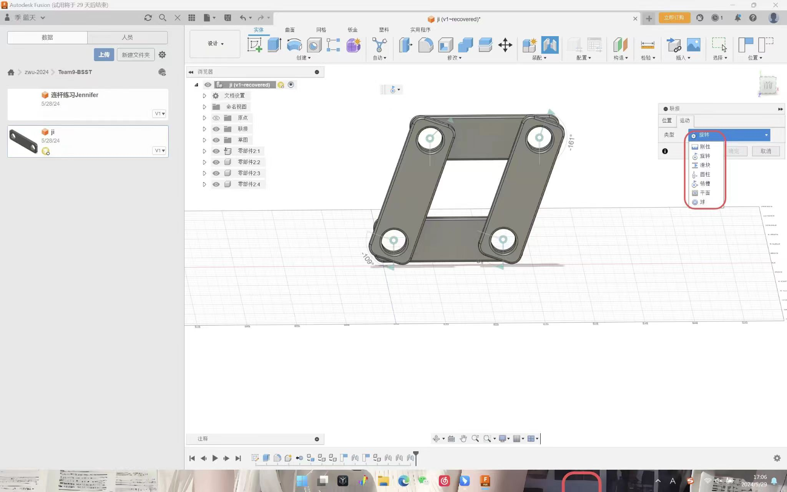
Four point twisted connection, moving with mouse drag.
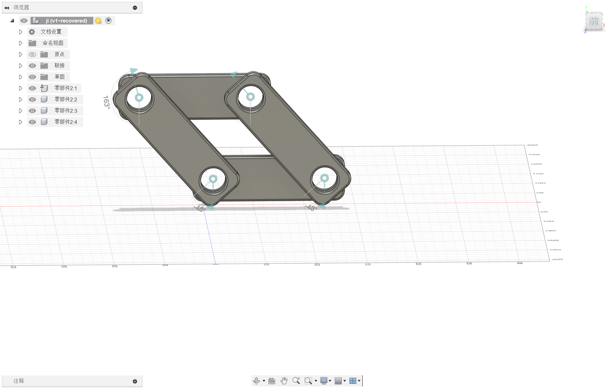
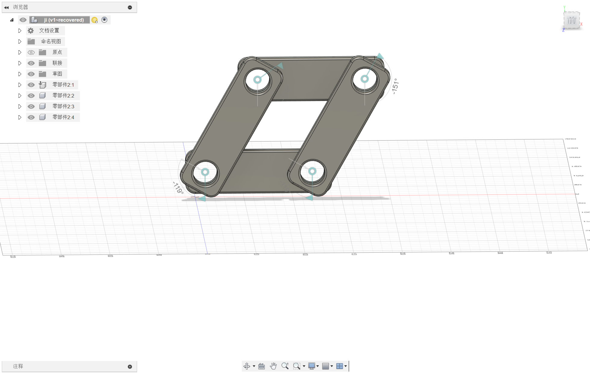
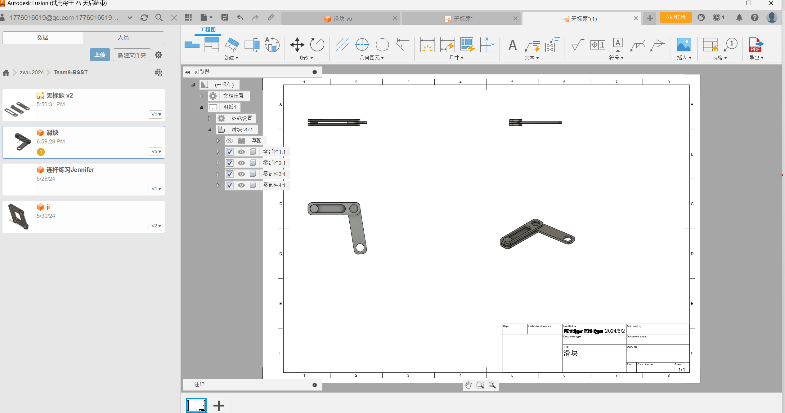
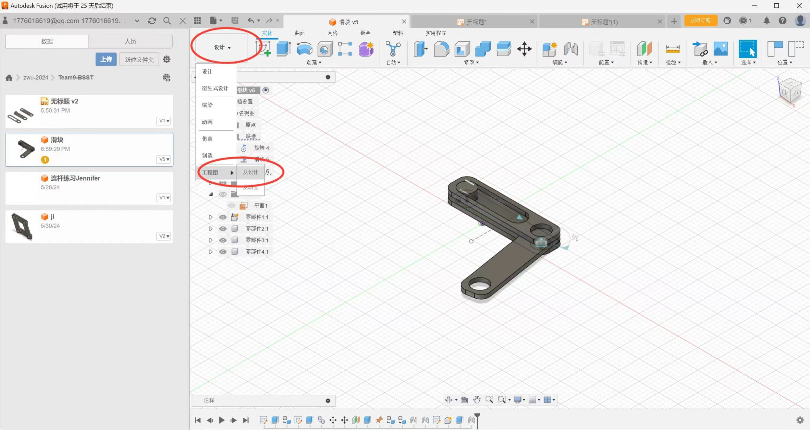
SolidWorks
is a three-dimensional computer-aided design (CAD) software developed by
Dassaul Systems, which is widely used in engineering and design fields.
SolidWorks
has powerful modelling functions, which can help engineers and designers
create and modify 3D models quickly and accurately.
The following are some main features of
SolidWorks
:
3D modelling: SolidWorks provides rich modelling tools, including solid
modelling, surface modelling and assembly design, which can meet various
complex design needs.
Graphical user interface: SolidWorks has an intuitive user interface,
which allows users to easily learn and use software and quickly get
started with design work.
Engineering analysis: SolidWorks integrates finite element analysis
(FEA) and fluid mechanics analysis (CFD) tools to help engineers
evaluate product performance and optimise design.
File exchange: SolidWorks supports file exchange with other CAD
software, can share data with other team members, and collaborate with
suppliers and customers.
Automation tools: SolidWorks provides many automation tools, such as
automatic generation of design, part library management and drawing,
which improves design efficiency.
In general, SolidWorks is a powerful CAD software, which is suitable for
various engineering and design tasks, and can help users quickly and
efficiently carry out product design and development.